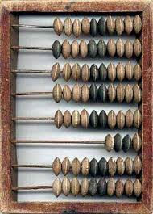
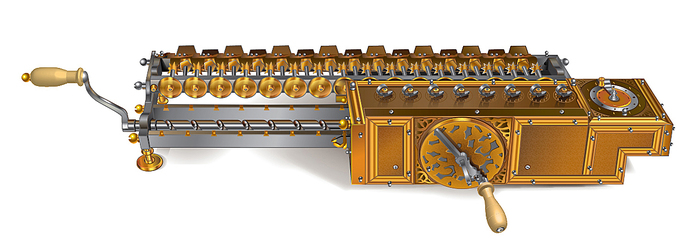

История Архитектуры ЭВМ и ОС
Компоненты современного вычислителя:
- Процессоры, которые выполняют счетные задачи и организуют вычислительный процесс.
- Оперативная и долговременная память, которая сохраняет наши данные.
- Сетевые и коммуникационные интерфейсы, которые позволяют подключать к компьютеру разнообразные устройства и обмениваться информацией с другими компьютерами.
- Системная плата позволяет объединить устройства компьютера.
Самое первое вычислительное устройство – счёты

Первая счётная машина – калькулятор Лейбница (Германия 1673)

Профессор Вагнер и мастер Левин по подобию калькулятора Лейбница создали шестнадцатиразрядную счётную машину (1708)
Создано огромное множество приборов для измерения разного рода величин.
Физические величины заменены аналоговыми величинами, которые более применимы при расчётах.
Основной недостаток Аналоговых ЭВМ – большие габариты.
Главный плюс – быстрая скорость вычислений сложных операций.
Поколения цифровых компьютеров:
- Электронные лампы
- Транзисторы
- Интегральные схемы